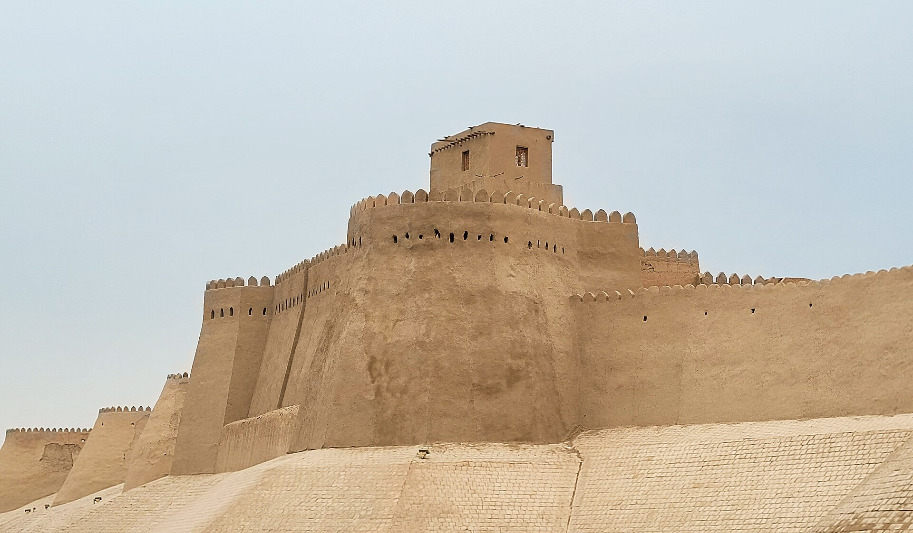

Uzbekistan and UNESCO: membership and the World Heritage sites, a history (1993–2026)
Independent Uzbekistan became a member of UNESCO in 1993 and that same year, on 13 January, acceded to the 1972 World Heritage Convention by succession. Today the country has 8 sites on the UNESCO World Heritage List (6 cultural, 2 natural): Itchan Kala in Khiva (1990), the Historic Centre of Bukhara (1993), the Historic Centre of Shakhrisyabz (2000), Samarkand (2001), Western Tien-Shan (2016), the Cold Winter Deserts of Turan (2023), the Zarafshan-Karakum Corridor (2023) and Tashkent Modernist Architecture (2026). Shakhrisyabz has been on the "heritage in danger" list since 2016. History — facts only.

After independence Uzbekistan began joining international organizations; one of them is UNESCO, the UN's educational, scientific and cultural organization. The following sets out, facts only, Uzbekistan's UNESCO membership, its accession to the World Heritage Convention, and the inscribed sites with their years.
UNESCO membership (1993)
Uzbekistan became a UNESCO member state in 1993 (reported as 26 October). In 1996 a UNESCO office (field office) opened in Tashkent. Membership established the country's international cooperation in cultural heritage, education and science.
Accession to the World Heritage Convention
Uzbekistan acceded to the 1972 Convention Concerning the Protection of the World Cultural and Natural Heritage on 13 January 1993 by succession — that is, as a former union republic it continued its obligations. It is this Convention that provides the basis for inscribing sites on the "World Heritage" List.

Itchan Kala — the first site (1990)
The first World Heritage site on Uzbekistan's territory is Itchan Kala (the inner city) in Khiva, inscribed in 1990. This happened while the country was still part of the USSR: at the time the party to the Convention was the USSR. Itchan Kala is an intact historic town surrounded by thick mud-brick walls, with surviving mosques, madrasas and minarets.
Bukhara, Shakhrisyabz and Samarkand
During the independence years three more cities were inscribed: the Historic Centre of Bukhara (1993), the Historic Centre of Shakhrisyabz (2000) and "Samarkand – Crossroad of Cultures" (2001). The Historic Centre of Shakhrisyabz was placed on UNESCO's "List of World Heritage in Danger" in 2016 over construction and conservation concerns — the only such site in Uzbekistan.
Natural and transnational sites
The later sites belong to several countries (transnational): the Western Tien-Shan mountain range (2016, natural — Kazakhstan, Kyrgyzstan, Uzbekistan); the "Cold Winter Deserts of Turan" (2023, natural — Kazakhstan, Turkmenistan, Uzbekistan); and "Silk Roads: Zarafshan-Karakum Corridor" (2023, cultural — Tajikistan, Turkmenistan, Uzbekistan).
Tashkent Modernist Architecture (2026)
In 2026, at the 48th session of the World Heritage Committee held in Busan, South Korea, "Tashkent Modernist Architecture" was inscribed — Uzbekistan's 8th site. With it, the number of the country's World Heritage sites reached 8: 6 cultural and 2 natural.
Intangible cultural heritage
Besides physical monuments, UNESCO also lists intangible cultural heritage. From Uzbekistan these include: the Cultural Space of Boysun (proclaimed a "masterpiece" in 2001 and incorporated into the Representative List in 2008), Shashmaqom music (with Tajikistan; 2003/2008), Navruz (from 2009 as a multi-country element), Katta Ashula (2009), Askiya (2014), the culture and tradition of palov/osh (2016), the Khorezm dance Lazgi (2019) and the art of the bakhshi (2021).
UNESCO's role in restoration
Inscription on the World Heritage List places the historic centres of Samarkand, Bukhara, Khiva and Shakhrisabz under international protection. UNESCO supported commemorative and safeguarding programmes such as the 2,500th anniversaries of Bukhara and Khiva and the 2,750th anniversary of Samarkand; it also carried out projects to preserve mud-brick monuments along the Silk Road and to train local specialists.
Why this matters
UNESCO membership and the inscription of monuments gave Uzbekistan's historic cities worldwide recognition and placed an obligation to protect them. This is part of the independent state's cultural diplomacy: opening to the world by preserving its heritage. For the diaspora, too, it is a bridge that presents Uzbekistan's heritage in an international language.

Sources
- UNESCO World Heritage Centre — Uzbekistan (States Parties): succession 13 Jan 1993; 8 properties; Shakhrisyabz in danger
- UNESCO Office in Tashkent — About (Uzbekistan a UNESCO member since 1993; office opened 1996)
- Wikipedia — List of World Heritage Sites in Uzbekistan (inscription years; Tashkent Modernist Architecture, 2026)
- Euronews — Tashkent's modernist architecture joins UNESCO World Heritage List (2 Aug 2026)
- uza.uz — Uzbekistan and UNESCO: development of cultural relations (restoration role, anniversaries)